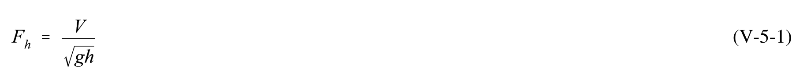
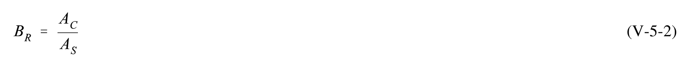
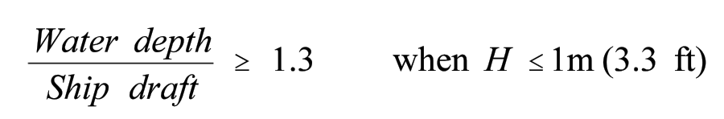
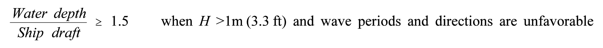
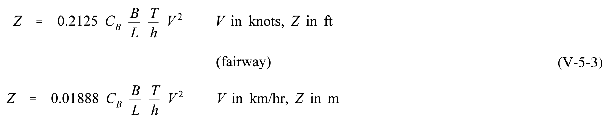
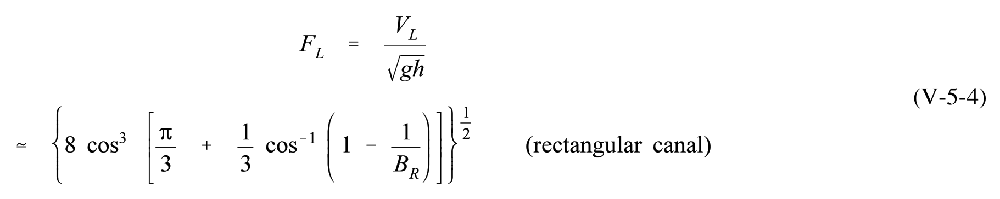
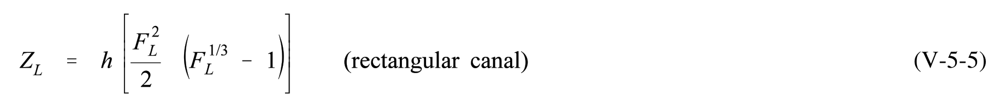
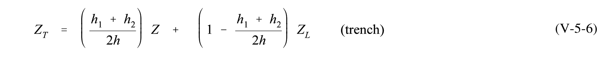
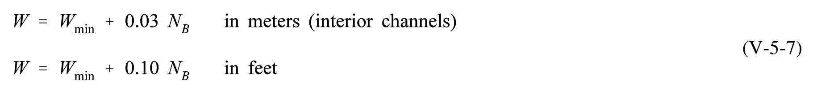
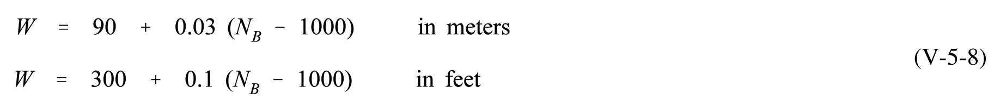

10 equations — 10 machine-verified, 0 flagged. Green = verified, amber = flagged (still shows best LaTeX + source crop).
| # | ID | Status | Rendered (KaTeX) | Source crop (PDF) |
|---|---|---|---|---|
| 1 | V-5-1 | agreed | $$F _ { h } = { \frac { V } { \sqrt { g h } } }$$ |  |
| 2 | V-5-2 | agreed | $$B_R = \frac{A_C}{A_S}$$ |  |
| 3 | V-5-3 | agreed | $$\frac{\text{Water depth}}{\text{Ship draft}} \geq 1.3 \quad \text{when } H \leq 1 \text{m (3.3 ft)}$$ |  |
| 4 | V-5-4 | single_verified | $$\frac{\text{Water depth}}{\text{Ship draft}} \geq 1.5 \quad \text{when } H > 1 \text{m (3.3 ft)} \text{ and wave periods and directions are unfavorable}$$ |  |
| 5 | V-5-3 | agreed | $$Z = 0.2125 C_B \frac{B}{L} \frac{T}{h} V^2 \qquad V \text{ in knots}, Z \text{ in ft}$$ |  |
| 6 | V-5-4 | single_verified | $$F_L = \frac{V_L}{\sqrt{gh}}$$ |  |
| 7 | V-5-5 | single_verified | $$Z_L = h \left[ \frac{F_L^2}{2} \left( F_L^{1/3} - 1 \right) \right] \qquad \text{(rectangular canal)}$$ |  |
| 8 | V-5-6 | agreed | $$Z_T = \left( \frac{h_1 + h_2}{2h} \right) Z + \left( 1 - \frac{h_1 + h_2}{2h} \right) Z_L \quad (\text{trench})$$ |  |
| 9 | V-5-7 | resolved | $$W = W_{\mathrm{min}} + 0.10 \ N_B \qquad \text{in feet}$$ |  |
| 10 | V-5-8 | agreed | $$W = 90 + 0.03 (N_B - 1000)$$ |  |